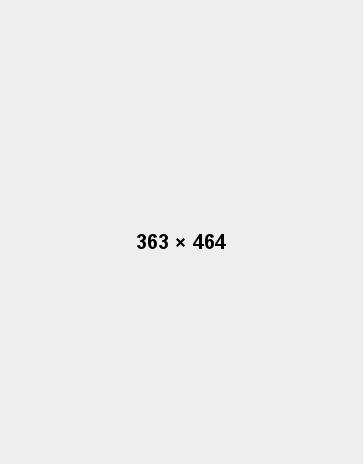
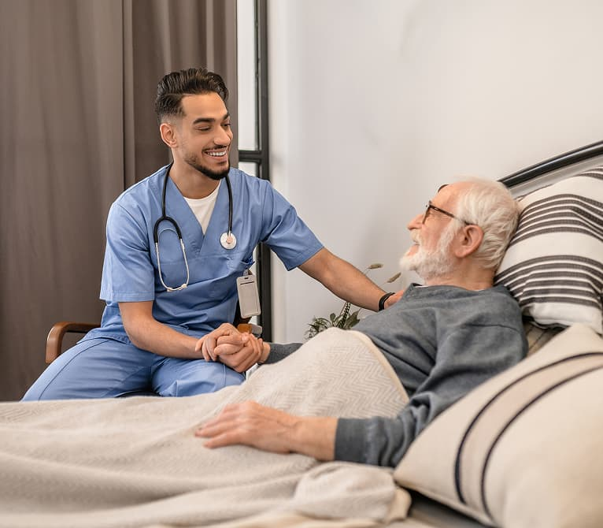
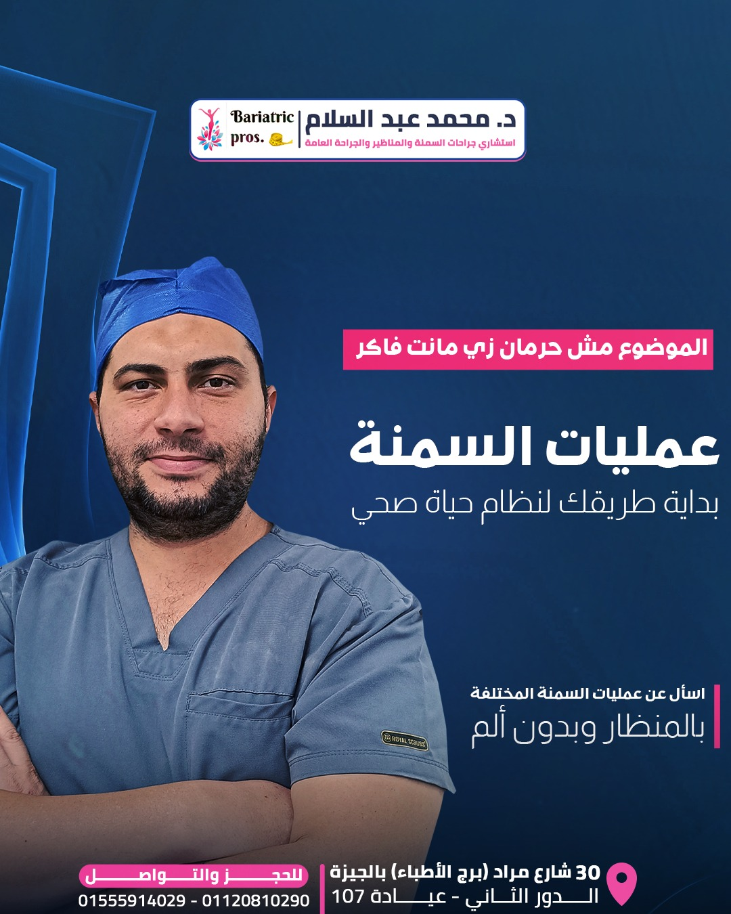

إيماننا إن المعرفة قوة — بنوصل لمريضنا كل معلومة عن حالته بوضوح عشان يحس إنه فاهم كل خطوة. د. محمد عبدالسلام قضى أكتر من 25 سنة في بناء ممارسة طبية أساسها الدقة والصدق والاهتمام الحقيقي.
مرخّص لممارسة الطب والجراحة في مصر

مؤهل متخصص متقدم في الجراحة العامة

الاتحاد الدولي لجراحات السمنة

منشأة جراحية ومعايير تشغيل معتمدة

تدريب جراحي موثّق وكفاءة مستمرة

تدريب متخصص في الجراحة قليلة التدخل
الفريق كله خلاني حاسة إن قرار صعب بقى آمن وسهل. كل سؤال كان ليه إجابة واضحة قبل يوم العملية.
د. عبدالسلام وضّح لي كل خطوة في رحلة التعافي. دلوقتي بعد سنة، النتيجة غيّرت حياتي فعلاً.
من أول استشارة لحد المكالمات بعد العملية، حسّيت إن حد فعلاً بيتابعني. عيادة أنصح بيها بجد.
الريادة في الجراحات الآمنة والمتقدمة — وضع أعلى معايير الرعاية وبناء الثقة كل يوم.
رعاية محورها المريض باستخدام أحدث التقنيات وأسلوب إنساني، مع التركيز على النتائج وجودة الحياة.